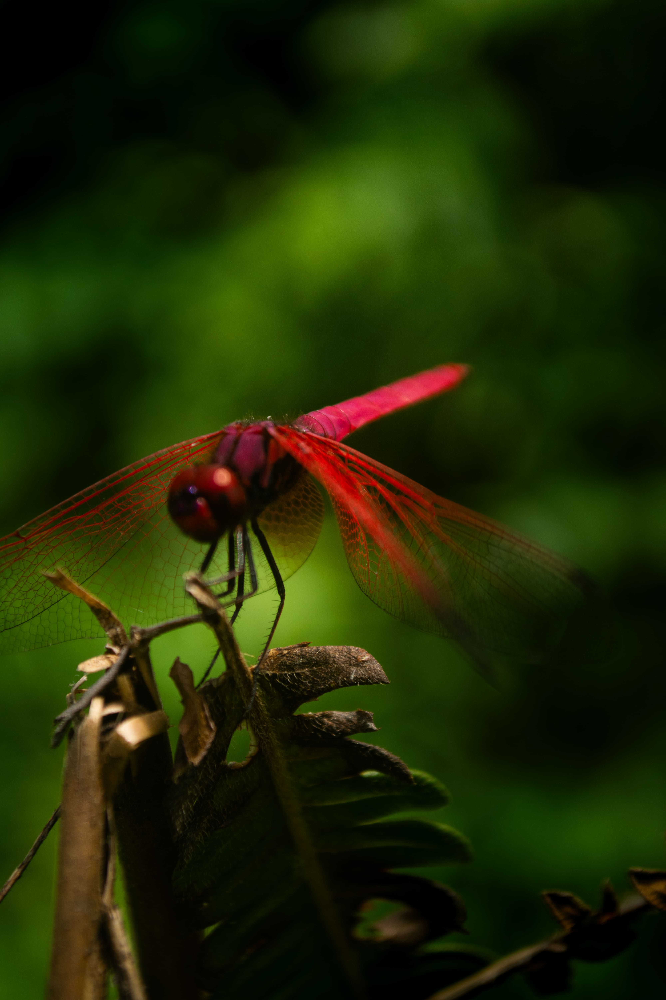
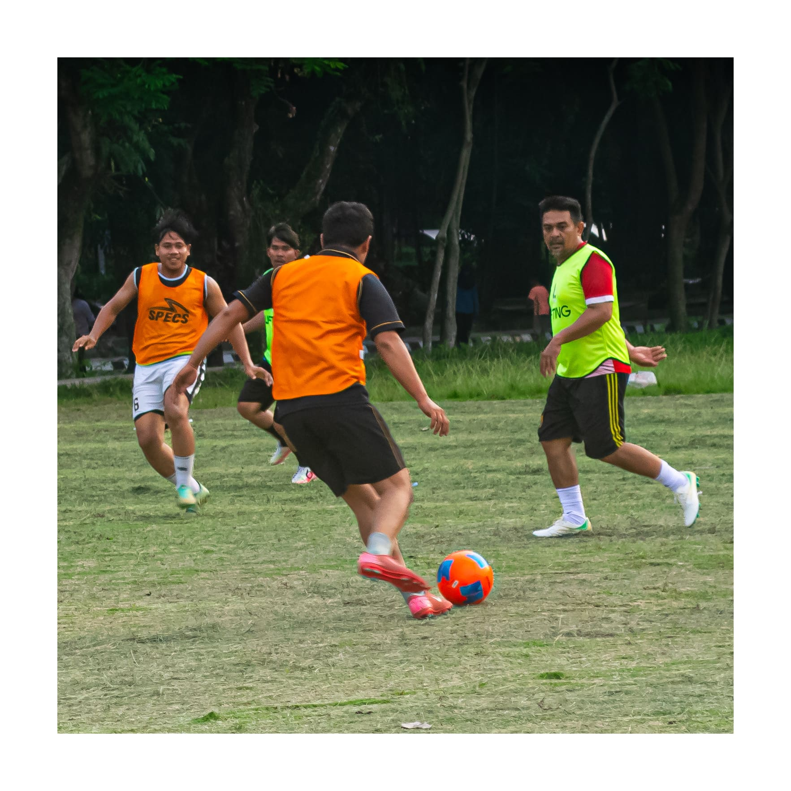
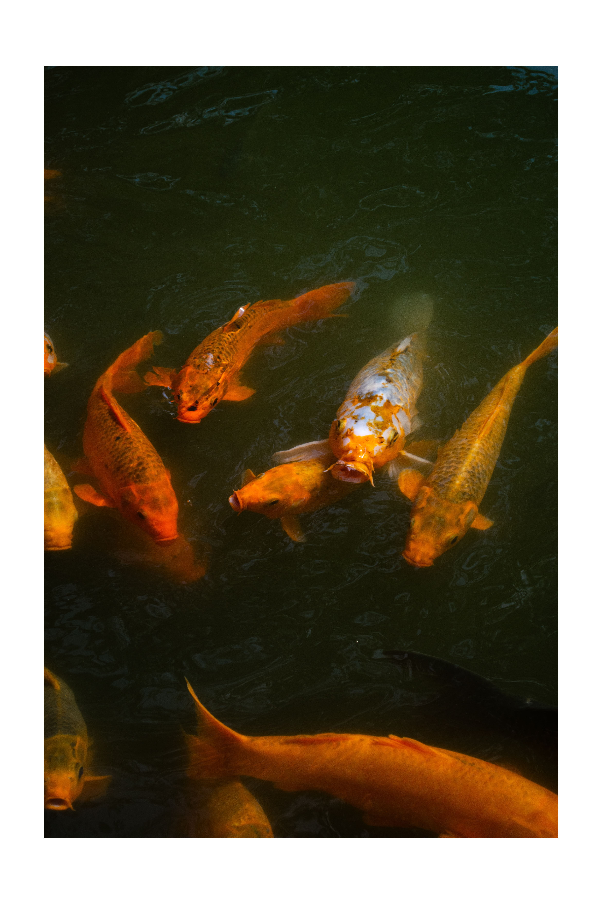
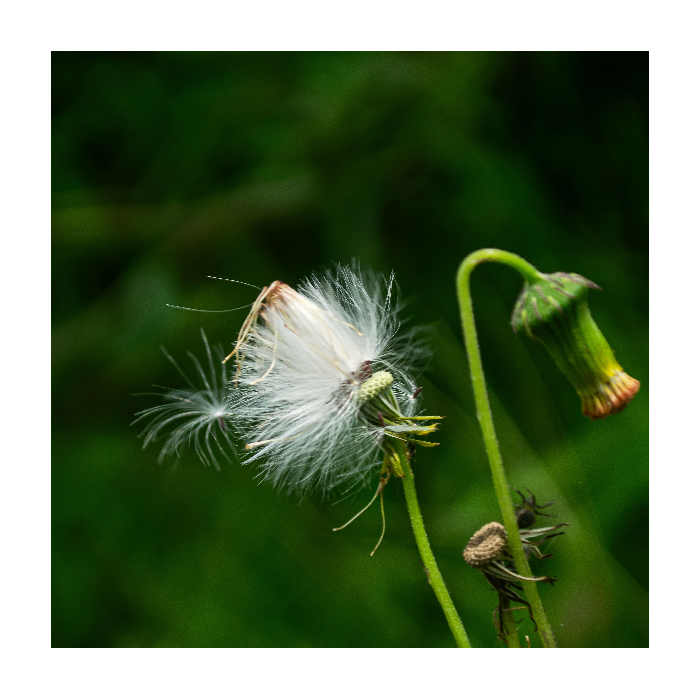
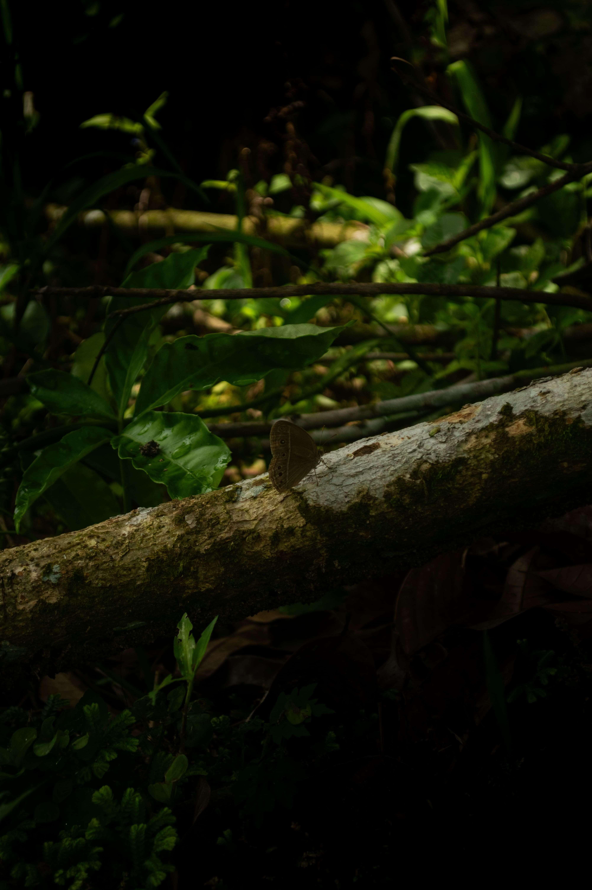
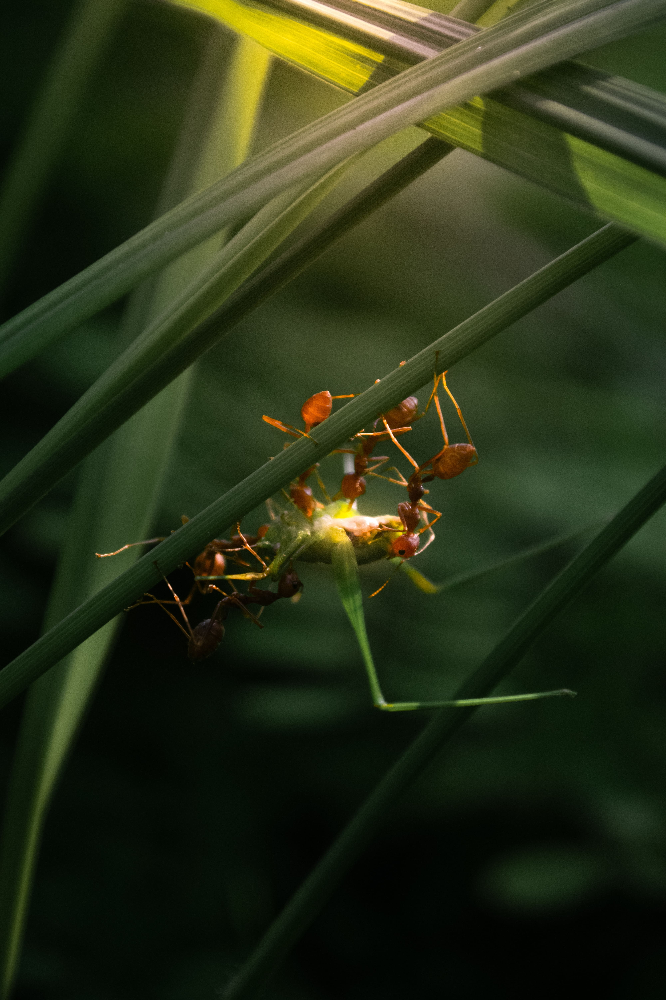
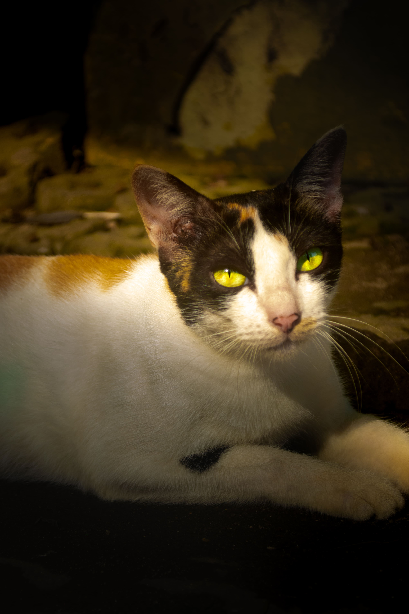
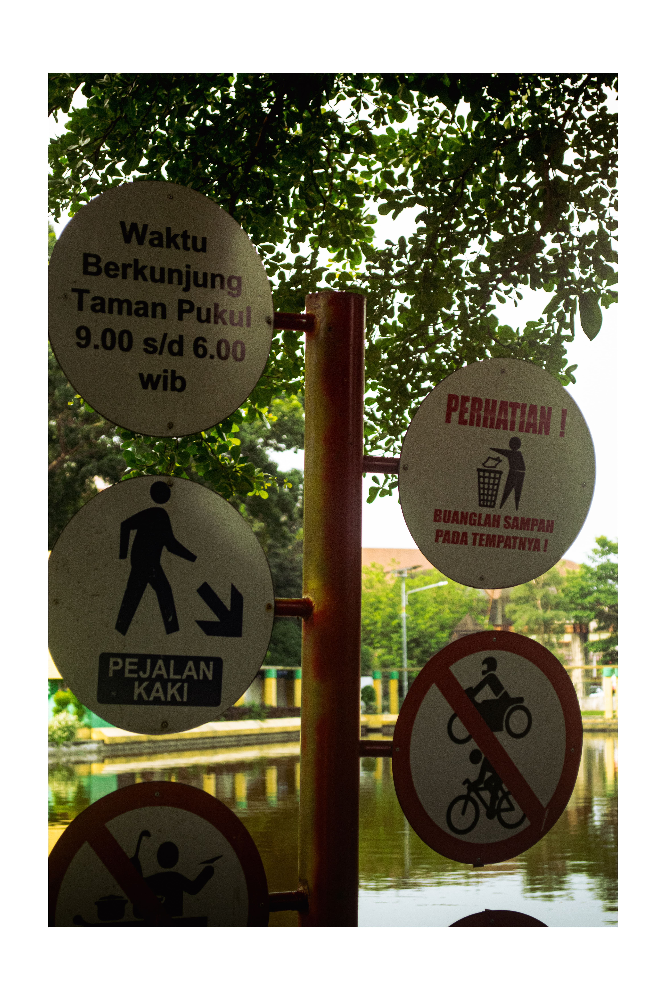
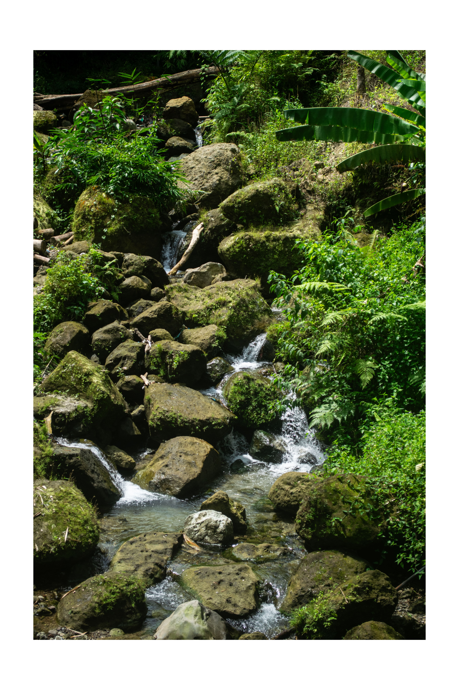

Selected Works

Bara di Ujung Ranting
Merah menyala di tengah keheningan alam. Tangkapan makro ini mengabadikan detail struktur sayap transparan dan warna dramatis seekor capung merah yang sedang bertengger tenang di antara rimbunnya dedaunan.

Dinamika di Lapangan Hijau
Sebuah momen intensitas tinggi dan fokus penuh. Pembekuan gerakan saat perebutan bola menampilkan ekspresi ketegangan, strategi, dan semangat olahraga dalam satu bingkai yang hidup.

Tarian Keemasan
Simbiosis warna dan ketenangan. Gerakan dinamis kawanan ikan koi emas berkilauan menembus kegelapan air telaga, menciptakan kontras visual yang elegan serta ketenangan yang hipnotis.

Penerbang Harapan
Kelembutan yang menyimpan daya tahan. Foto makro ini memperlihatkan benih liar berbulu halus yang bersiap tertiup angin—sebuah simbol perjalanan baru dan keindahan mikro yang kerap terlewatkan.

Kamuflase Sunyi
Keharmonisan warna bumi. Kupu-kupu cokelat yang beristirahat di atas kayu berlumut menyatu sempurna dengan habitatnya, memperlihatkan estetika alami dari adaptasi dan ketenangan hutan.

Kolaborasi Tanpa Batas
Drama di balik helaian rumput. Ditembak dengan teknik makro ekstrem, foto ini menangkap momen luar biasa kolaborasi para semut rangrang saat mempertahankan teritori dan bertahan hidup bersama.

Tatapan Zamrud
Pencahayaan alami yang menyorot ketajaman mata hijau sang kucing. Foto ini memancarkan aura misterius, ketenangan, dan karakter kuat dari sang pemangsa kecil.

Petunjuk dalam Sunyi
Objek-objek fungsional perkotaan yang membisu di tepi danau. Komposisi siluet dan sudut pandang yang unik mengubah rambu taman biasa menjadi karya fotografi ruang publik yang artistik.

Selingan di Atas Besi
Aesthetic bernuansa minimalis. Tiga ekor burung gereja hinggap sejajar di atas konstruksi besi dengan latar langit terang, menciptakan komposisi bentuk geometris dan ritme visual yang menenangkan.

ketenagan tidak bisa di gambarkan hanya dengan cerita tetapi harus di rasakan dan di lihat secara langsung